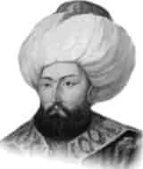

SULTAN ÇELEBİ MEHMET
Babası : Sultan Yıldırım Beyazıt
Annesi : Devlet Hatun
Doğumu : 1389
Vefatı : 26 Mayıs 1421
Saltanatı : 1413 - 1421 (8 yıl)
Çelebi Sultan Mehmet, orta boylu, yuvarlak yüzlü, çatık kaşlı, beyaz tenli, kırmızı yanaklı, geniş göğüslü idi. Kuvvetli bir vücuda sahipti. Gayet hareketli ve cesurdu. Güreş yapar ve çok kuvvetli yay kirişlerini de çekerdi.
Padişahlığı müddetince bizzat yirmi dört muharebede bulunmuş ve kırka yakın yara almıştı. Başında kullanmış olduğu sarık, altın işlemeli kavuğu ile gayet güzel görünürdü. İçi kürklü ve yakası dik olan bir kaftan kullanırdı. Müslümanlara karşı göstermiş olduğu adaleti, aynı zamanda Hıristiyan tebaasına karşı da gösterirdi.
Çelebi Sultan Mehmet, tahsilini Bursa Sarayı’nda tamamladı. Daha sonra babası tarafından Amasya Sancağı’na vali tayin edildi. Valiliği sırasında da devlet işlerini öğrendi. Çelebi Sultan Mehmet’e bir bakıma Osmanlı İmparatorlu-ğu’nun II. kurucusu gözüyle bakılabilir. Onun uzun müddet ve başarı ile yapmış olduğu mücadeleyi kısaca şöyle sıralayabiliriz:
Evvela Anadolu’nun birliği için kardeşleri ile mücadele etti. 1410 yılında Süleyman Çelebi’yi, 1413 yılında de Musa Çelebi’yi tasfiye ederek birliği sağladı. Osmanlı tahtında yalnız kalınca ilk işi etrafındaki beylikleri itaati altına almaya girişmek oldu. 1414’de Karaman’a sefer yaptı ve Karaman Beyi’ni esir aldı. Ona “Bir daha Müslümanlara zararım dokunmayacak” diye yemin ettirdikten sonra serbest bıraktı. Can-dar Beyliği’ni de hâkimiyeti altına aldı. 1415’de Venedikli-ler’le ilk deniz savaşı yapıldı. 1416 ve 1417 yıllarında Avrupa’ya akınlar düzenledi, büyük zaferler kazanıldı. 1419’da Tuna Nehri tekrar geçildi. 1420’de Eflak Voyvodası bir savaşta öldürüldü, yerine kardeşi tayin edildi. Candar Beyliği ise tamamen Osmanlı topraklarına katıldı.
1421 yılında otuz iki yaşında iken Edirne’de vefat etti. Naaşı, Bursa’ya getirilerek Yeşil Türbe’ye defnedildi. Çelebi Sultan Mehmet vefat edeceği sırada, Beyazıt Paşa’yı yanına çağırttı ve ona, “Halef olarak yerime oğlum Murat’ı tayin ettim. Bana karşı göstermiş olduğun itaat ve sadakati ona karşı da göster.
Derhal, Murat’ı buraya getirmenizi istiyorum. Zira ben artık bu döşekten kalkamam. Murat gelmeden önce emr-i hak vaki olursa Murat gelinceye kadar sakın ölümümü kimseye duyurmayın.” Şehzade Murat henüz Amasya’da iken, Çelebi Sultan Mehmet 26 Mayıs 1421’de vefat etti. Padişahlar arasında ilk defa vefatı gizlenen zat kendisi olmuştur.
Erkek çocukları: Mustafa Çelebi, II. Murat, Ahmet, Yusuf, Mahmut.
Kız çocukları: Fatma ve Selçuk Hatun.